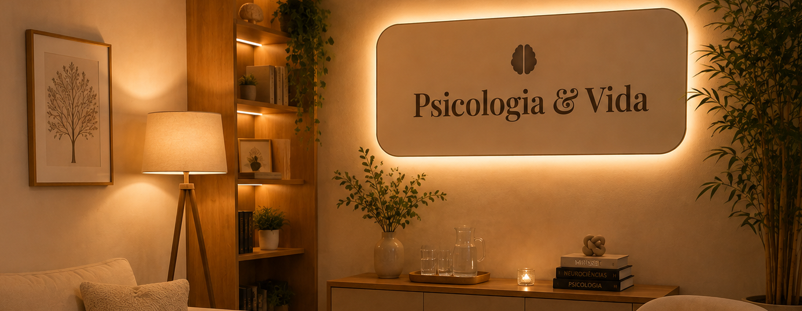
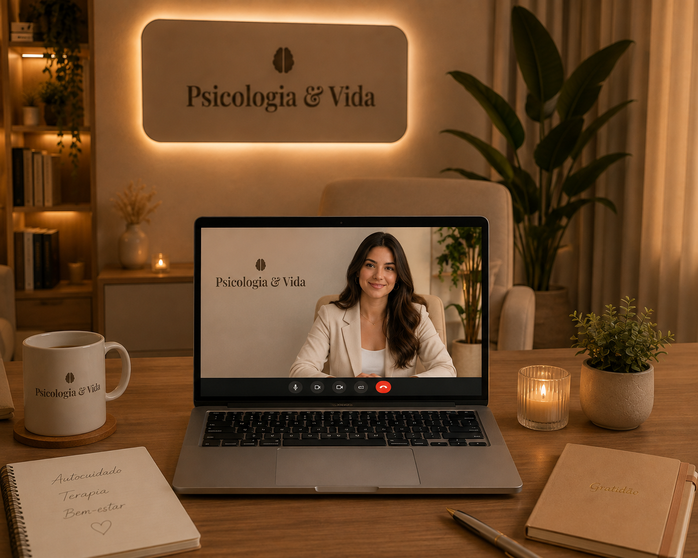

Psicoterapia individual online e presencial para adultos e adolescentes. Resgate seu equilíbrio emocional com um acompanhamento personalizado e humanizado.
"Acredito no acolhimento sem julgamentos como o primeiro passo para a transformação emocional."
Especialista em Terapia Cognitivo-Comportamental (TCC) e Saúde Mental, dedico minha jornada clínica a ajudar pessoas a lidarem com ansiedade, estresse, transições de vida e autoimagem.
Especialização voltada ao manejo do estresse e ansiedade.
Sessões estruturadas e focadas no seu bem-estar diário.
O processo terapêutico é construído no seu ritmo, oferecendo ferramentas reais para lidar com seus desafios diários.
Aprenda a desacelerar a mente, controlar crises e lidar com a sobrecarga da rotina diária.
Compreenda a origem da falta de motivação e reative o sentido e o prazer em suas escolhas.
Desenvolva autocompaixão, segurança interna e fortaleça sua autoconfiança no dia a dia.
Manejo de conflitos interpessoais, imposição de limites saudáveis e comunicação assertiva.
Um espaço pensado para proporcionar tranquilidade, privacidade e conforto no seu atendimento presencial ou online.

Espaço presencial com iluminação suave e isolamento acústico.

Sessões por videochamada com total sigilo do conforto da sua casa.
Tudo o que você precisa saber antes de iniciar o seu processo terapêutico.
As sessões individuais têm duração de 50 minutos e ocorrem semanalmente ou quinzenalmente, conforme combinado.
Realizada por plataforma de vídeo segura. Você só precisa de uma conexão estável e um local privativo para conversar livremente.
Sim. Todas as conversas são protegidas pelo Código de Ética Profissional do Psicólogo (CRP).
Atendo de forma particular, porém forneço recibos oficiais para solicitação de reembolso no seu convênio médico.
Histórias reais de quem buscou apoio e transformou sua relação com o bem-estar mental.
"A terapia com a Dra. Sofia me deu forças para superar um momento de burnout no trabalho e reorganizar minhas prioridades com leveza."
"Excelente profissional. As sessões online facilitaram muito a minha rotina e o acolhimento me fez sentir seguro desde o primeiro dia."
"Aprendi a lidar com a minha ansiedade e parar de me cobrar tanto. Hoje vivo com muito mais paz e clareza nas decisões."